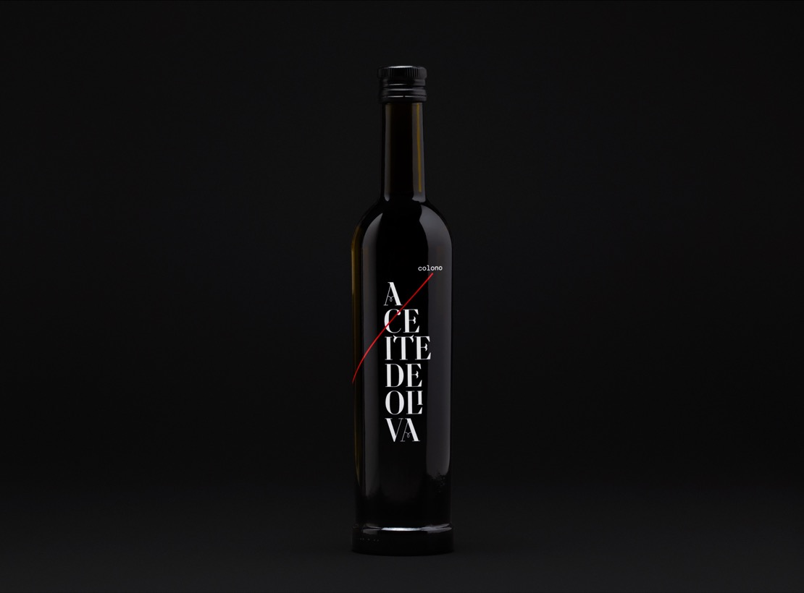

MY PASSION
Every great dream begins with a dreamer. Always remember, you have within you the strength, the patience, and the passion to reach for the stars to change the world.
Leadership is not about a title or a designation. It's about impact, influence and inspiration. Impact involves getting results, influence is about spreading the passion you have for your work, and you have to inspire team-mates and customers.
